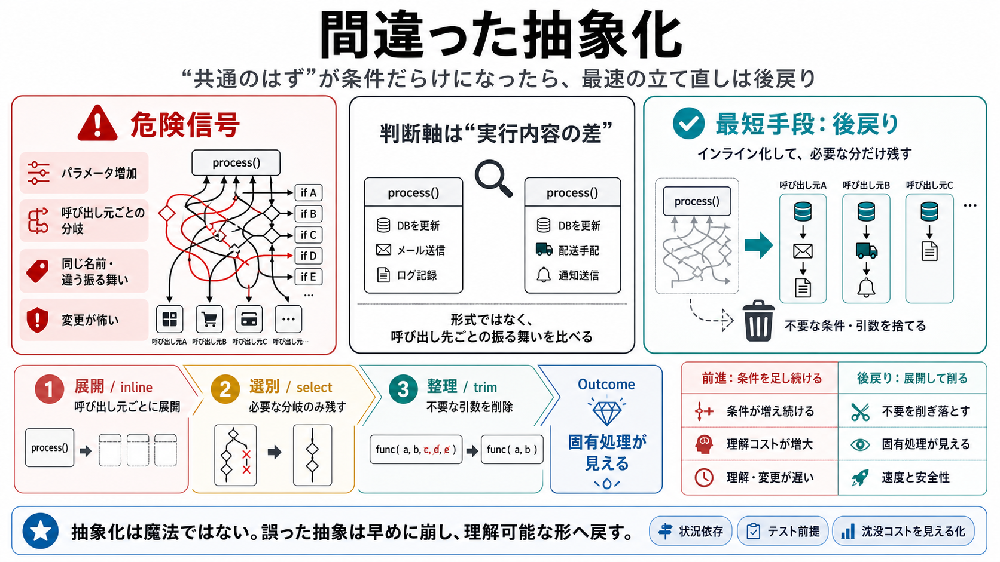

The Wrong Abstraction — Sandi Metz
# The Wrong Abstraction. *I originally wrote the following for my Chainline Newsletter, but I continue to get tweets abo…

# The Wrong Abstraction. *I originally wrote the following for my Chainline Newsletter, but I continue to get tweets abo…
It's better to tolerate duplication than to anticipate the wrong abstraction. Duplication is useful when it supplies ind…
My rule of thumb is: don't generalize until you have seen at least three examples. If you see the same code twice, this …
If you have duplicate code, then both of the duplicates utilize the same abstractions. That's kind of the definition of …
You might be using the "wrong abstraction". Sandi Metz's article explains why duplication can be better than overcomplic…